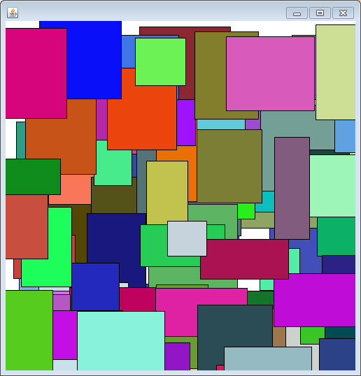
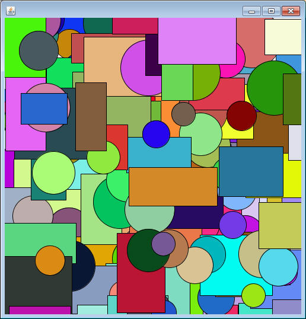
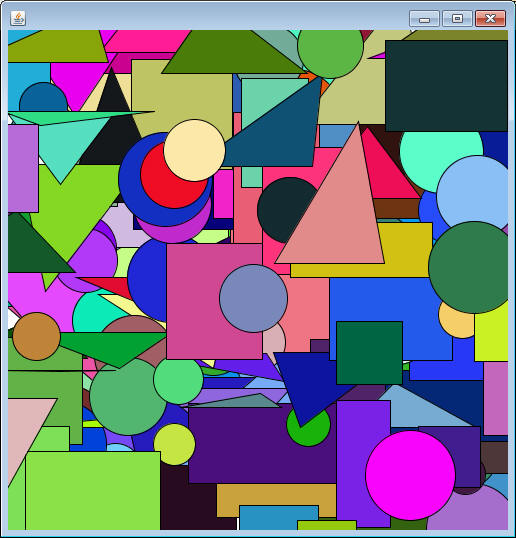
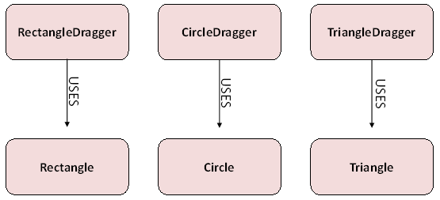
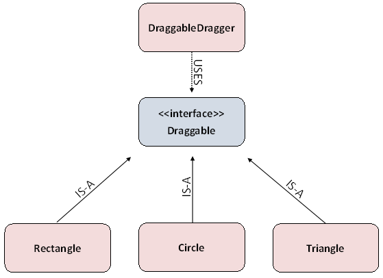

Previously we've worked with SaccoObject and its ability to work with MouseEvents. With those we were able to create an object that we could drag across the screen. Now that we've got some knowledge of arrays under our belts we can make a window with lots of objects on it.
Copy and Paste the following Rectangle class into your project. Read through and make sure that you can tell what each method does before proceeding to the next class. The containsPoint method may be a little bit scary for some, but it's a faster way of returning a boolean than using if statements.
import sacco.*;
public class Rectangle
{
private int x,y,width,height,red,green,blue;
//constructs a new Rectangle with a random x,y,width,height, and color
public Rectangle()
{
width = (int)(Math.random()*100+50);
height = (int)(Math.random()*100+50);
x = (int)(Math.random()*500);
y = (int)(Math.random()*500);
this.randomizeColor();
}
public void randomizeColor()
{
red = (int)(Math.random()*256);
green = (int)(Math.random()*256);
blue = (int)(Math.random()*256);
}
//when called, this method will paint the current Rectangle
public void paintSelf(PaintBrush brush)
{
brush.setColor(red,green,blue);
brush.fillRectangle(x,y,width,height);
brush.setColor(0,0,0);
brush.drawRectangle(x,y,width,height);
}
//moves the rectangle by the given amount in each direction
public void translate(int tmpX, int tmpY)
{
x += tmpX;
y += tmpY;
}
//returns true if both x and y are within the boundaries of the rectangle
public boolean containsPoint(int tmpX, int tmpY)
{
return tmpX >= x && tmpX<= x+ width && tmpY>= y && tmpY <= y+height;
}
}
Now consider the RectangleDragger class below, which is constructed using an array of Rectangle objects. The paintWindow method loops through every Rectangle in the array and tells it to paint itself. The goal of this program is to be able to grab a Rectangle and drag it around, so there are a couple more instance fields that are necessary to have.
The drag variable starts out as null, meaning that it doesn't reference a constructed object. The onMouseMove method, which is called every time the mouse moves, only tells the Rectangle in drag to translate if it isn't null. The way that the drag variable gets a value is when the mouse is pressed. For each press, every Rectangle in the array is asked if it contains the point, and is stored into drag if so. This guarantees that only one Rectangle can be dragged at a time. Once the mouse is released, drag is set back to null so that the dragging stops.
import sacco.*;
public class RectangleDragger extends SaccoObject
{
private Rectangle[] rects;
private Rectangle drag;
private int lastX,lastY;
//Constructs a new RectangleDragger that will manage an array of Rectangles
public RectangleDragger(Rectangle[] arr)
{
rects = arr;
drag = null; //null means that nothing is being dragged
}
@Override
public void paintWindow(PaintBrush brush)
{
//loops through and paints every Rectangle in the array
for(int i =0; i<rects.length;i++)
{
rects[i].paintSelf(brush);
}
}
@Override
public void onMouseMove(MouseEvent m)
{
// when drag is null, there is no object to translate
if( drag != null)
{
drag.translate(m.getX()-lastX, m.getY()-lastY);
}
lastX = m.getX();
lastY = m.getY();
}
@Override
public void onMousePress(MouseEvent m)
{
/*
* when the mouse is pressed, this code finds whatever rectangle
* contains the clicked location and stores it in drag. Since
* drag can only hold one object reference at a time, it will
* have the last one it comes across.
*/
for( int i=0; i<rects.length; i++)
{
if(rects[i].containsPoint(m.getX(),m.getY()))
{
drag = rects[i];
}
}
}
@Override
public void onMouseRelease(MouseEvent m)
{
//when the mouse is released, the currently dragged rectangle is 'dropped'
drag =null;
}
}
Compile and run this program with the following method, which constructs 100 random Rectangles in an array, and then constructs a RectangleDragger using them:
public static void rectRunner()
{
Rectangle[] rectangles = new Rectangle[100];
for( int i =0; i< rectangles.length; i++)
{
rectangles[i] = new Rectangle();
}
RectangleDragger dragger = new RectangleDragger(rectangles);
dragger.setVisible(true);
}

Designing the Draggable Interface
While the RectangleDragger is amusing, it would be much better if there were other shapes besides Rectangles that could be used. Instead of writing another Dragger for a specific class, let's create an interface and create a Dragger that works for many different classes.
1) Reading through the RectangleDragger class, you'll notice that there are multiple methods that Rectangle has that are necessary for the Dragging process. Find the three important methods.
2) Create an interface named Draggable, which has headers for those three methods that you found in part 1. Don't forget that very specific parameters are needed in order for this to work.
3) Go to the Rectangle class and modify the header so that it implements Draggable. You should not have to change the Rectangle class anymore. If the compiler gets angry then it's probably an issue with the interface that you wrote.
The DraggableDragger
Before we think about what other objects we want to drag around the screen, let's write the DraggableDragger class. This class should essentially be a clone of the RectangleDragger, but instead of using the specific Rectangle variables we're going to use the general Draggable variables.
Once everything compiles you should make sure that the DraggableDragger works by using the method below. We're using a DraggableDragger this time, but since we're still using only Rectangles it should operate exactly the same as before.
Note: We are now done with the DraggableDragger class and we haven't even thought about what the other types of objects might be. This would not be possible without the use of interfaces and Polymophism.
public static void main()
{
Rectangle[] rectangles = new Rectangle[100];
for( int i =0; i<rectangles.length; i++)
{
rectangles[i] = new Rectangle();
}
DraggableDragger dragger = new DraggableDragger(rectangles);
dragger.setVisible(true);
}
More Draggables: The Circle Class
Now that we have the ability to drag any Draggable that we want, let's create another one and see if it works. Create a class named Circle, which will have instance fields for an x, y, and radius along with fields for red, green, and blue values. For the sake of this program, you should decide that x and y represent the center of the circle.
Create a constructor for Circle that takes in no parameters, but assigns random values to all of the instance fields. x and y should range from 0 to 500 while the radius should range between around 30 and 60. The rgb values should all max out at 255.
Now it's time to impilement the Draggable interface. An important thing to know about Polymorphism is that the methods don't have to be implemented in the exact same way, they only have to be named the same. For example, the paintSelf method of Circle should probably use the fillOval command (don't forget that since x and y are the center of the Circle you'll have to do some subtraction to figure out the upper left hand corner. And the containsPoint method should use the distance formula instead of a four part AND statement.
Once you're confident, use the following method to test out your Circle class.
public static void rcDragRunner()
{
Draggable[] draggables = new Draggable[200];
boolean bool = true;
for( int i =0; i < draggables.length; i++)
{
if(bool)
draggables[i] = new Circle();
else
draggables[i] = new Rectangle();
bool = !bool;
}
DraggableDragger dragger = new DraggableDragger(draggables);
dragger.setVisible(true);
}
Notice that this code alternates between adding a Circle and a Rectangle into the array. This is Polymorphism at work. Since both implement the Draggable interface, a single array can hold both.
Run the method and see if you can drag both the Rectangles and the Circles on the screen. Check to make sure that clicking the area just outside of a Circle doesn't cause that Circle to be dragged. If it does, then you might have to double check Circle's containsPoint method.

More Draggables: The Triangle Class
Our last Draggable shape will be a Triangle class.
Instead of a width and height your Triangle should have three Point objects as instance fields. Read about the Point class in the API, but do not write it. You will import it from sacco.jar. Also, have ints for the red, green, and blue values.
Add a constructor that will randomize the three Points, but don't just pick three random x and y values because you'll end up getting gigantic Triangles. Start by picking a single point with a random x and y to be your first Point. The other two points will be random distances from that Point. Pick a random width from 100 to 150 and create the second point by adding that width to the first point's x. For the third point pick a random number from 0 to the width to be the x offset, and a random number from -150 to positive 150 for the y offset.
For the paintSelf method, use PaintBrush's fillTriangle method which takes in three Point's as parameters.
The translate method will have to use a combination of the getX, getY, setX, and setY to move all three Points by the given amount.
The containsPoint method for Triangles is a lot tricker than the other two (RUN! IT'S MATH!!!). Copy and paste the following two methods, which combine to tell you if the triangle contains the given Point.
public boolean containsPoint(int x, int y)
{
Point d = new Point(x,y);
double triArea = this.getTriangleArea(a,b,c);
double tmpArea = this.getTriangleArea(d,b,c);
tmpArea += this.getTriangleArea(a,d,c);
tmpArea += this.getTriangleArea(a,b,d);
return Math.abs(triArea-tmpArea)<.001;
}
private double getTriangleArea(Point p1, Point p2, Point p3)
{
int aX = p2.getX() - p1.getX();
int aY = p2.getY() - p1.getY();
int bX = p2.getX() - p3.getX();
int bY = p2.getY() - p3.getY();
return Math.abs(aX * bY - bX * aY) / 2.0;
}
Make sure that your Triangle class implements Draggable, and run it with the following method:
public static void rtcDragRunner()
{
Draggable[] draggables = new Draggable[200];
for( int i =0; i < draggables.length; i++)
{
if(i%3==0)
draggables[i] = new Triangle();
else if(i%3 ==1)
draggables[i] = new Rectangle();
else
draggables[i] = new Circle();
}
DraggableDragger dragger = new DraggableDragger(draggables);
dragger.setVisible(true);
}

Why use the Draggable interface?
Before Draggable:

After Draggable:
